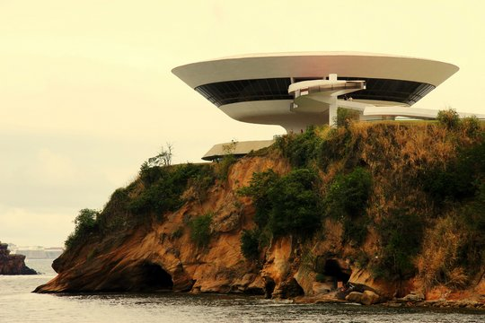
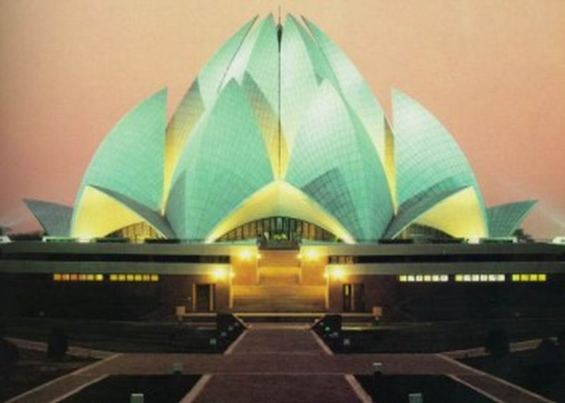
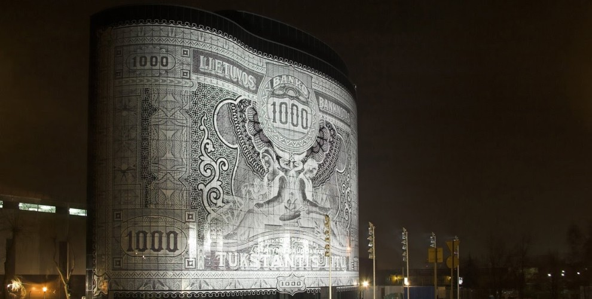
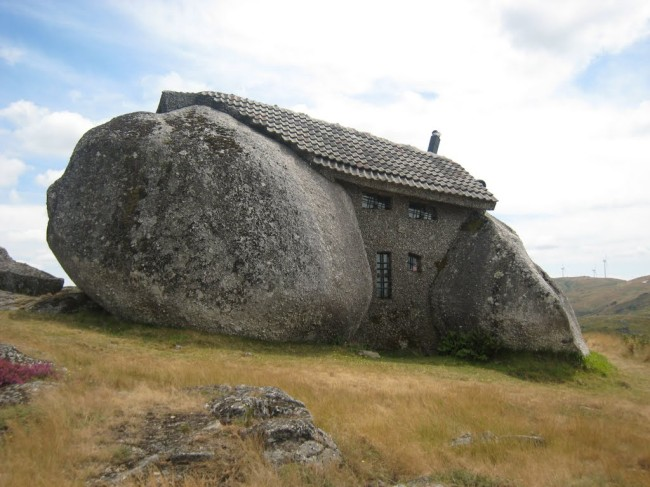

«Кривой Дом», Сопот, Польша («The Crooked House»)
 Перенесемся в город Сопот в Польше, где стоит один из самых
странных по форме домов нашего времени. «Кривой Дом» (он же «Горбатый Дом» «The Crooked House») не имеет
правильных форм и прямых углов и кажется детской вылепленной из пластилина фигуркой. Вся архитектура дома
подчинена, кажется, волнообразному движению океанских вод.
Перенесемся в город Сопот в Польше, где стоит один из самых
странных по форме домов нашего времени. «Кривой Дом» (он же «Горбатый Дом» «The Crooked House») не имеет
правильных форм и прямых углов и кажется детской вылепленной из пластилина фигуркой. Вся архитектура дома
подчинена, кажется, волнообразному движению океанских вод.
Дом был построен по эскизам польского художника Jan Marcin Szancer архитектором Яцеком Карновски, заслужив на конкурсе "Великие мечтатели" звание архитектурной выдумки года. По словам архитектора "В природе нет прямых линий и углов" - и архитектура дома близка к этому требованию природы. Дом построен "от людей и для людей", говорит Яцек Карновски.
Музей современного искусства. Нитерой, Бразилия
 Музей современного искусства — музей в городе Нитерой, Федеративная Республика Бразилия; знаменитое архитектурное творение Оскара Нимейера в стиле модернизма. Здание строилось в течение пяти лет и было завершено в 1996 году.
Шестнадцатиметровое бетонное гладкое цилиндрическое сооружение на тонкой ножке со стеклянным поясом одновременно похоже и на НЛО, и на экзотическое растение, выросшее на краю обрыва. Из панорамного окна музея, расположенного на самом берегу залива Гуанабара, открывается прекрасный вид через залив на Рио-де-Жанейро, статую Христа и Сахарную Голову. Диаметр трёхэтажной «тарелки» составляет 50 метров, в то время как диаметр колонны, на которой она установлена, — всего лишь 9 метров[1]. Колонна стоит посередине небольшого водоёма, что дополнительно придаёт зданию визуальную лёгкость. Для того, чтобы войти в музей, нужно пройти по длинному спиралеобразному пандусу. Преодолев подъём, посетитель сразу попадает в помещение картинной галереи, имеющей форму круга с большим панорамным окном.
Храм Лотоса. Дели, Индия
 Храм Лотоса — главный бахайский храм Индии и сопредельных стран, построенный в 1986 году. Расположен в городе Нью-Дели - столице Индии. Огромное здание из белоснежного пентелийского мрамора в форме распускающегося цветка лотоса — одна из наиболее популярных среди туристов достопримечательностей Дели. Известен как главный храм Индийского субконтинента и главная достопримечательность города. Храм Лотоса выигрывал несколько архитектурных наград и был упомянут во множестве газетных и журнальных статей.
В 1921 году молодая бомбейская община бахаи испросила у Абдул-Баха разрешение возвести бахайский храм в Бомбее, на что был якобы дан ответ: «По воле Бога в будущем величественный храм поклонения будет возведен в одном из центральных городов Индии», то есть в Дели.
Дом-банкнота в Литве
Это необычное здание называется «Office Center 1000». Число 1000 присутствует в названии офисного центра потому, что рисунком фасада стала бумажная купюра, выпущенная Литвой в годы независимости. Эти деньги ходили с 1926 года до присоединения Прибалтики к Советскому Союзу.
Здание расположено в одном из крупнейших деловых центров Литвы- городе Каунас. Этот дом с фасадом, похожим на денежную купюру, вполне понятно, арендуют два крупных литовских банка. Office Center 1000 представляет собой бизнес-центр класса А и было построено как символ вступления Литвы в Евросоюз. Стал доступен для арендаторов и посетителей в 2008 году.
Проект полностью разработан и реализован компанией «RA Studija». Сам проект принадлежит молодому литовскому архитектору Римасу Адомайтису (Rimas Adomaitis). В один день прославившийся специалист говорит, что это здание ни за что не должно символизировать всесущую власть денег над людьми и всеобщее перед ней преклонение, именно поэтому была взята не современная, а историческая купюра. Проецирование денежной купюры на внешний фасад дома позволило стать этому офисному центру респектабельным и престижным. Согласитесь, что это очень необычное и приятное ощущение - вести бизнес и зарабатывать деньги в доме, которое и само выглядит как деньги.
Дом-камень, Португалия
В Португалии, в горах недалеко от городка Фафе, в 1973 построен удивительный дом, похожий на дом из мультфильма про доисторическую семейку Флинтстоун. Дом построен между огромными камнями, которые заменяют ему стены. Асимметричные окна и покрытые мхом валуны, черепица с одной стороны и плоский скат с другой - уникальное строение стало туристической достопримечательностью. В доме 2 этажа, неподалеку есть открытый бассейн и даже каменный сарай. Дом привлекает большое количество туристов. Из-за этого его первоначальным жильцам пришлось переехать. Сейчас он пустует.
Над созданием этого дома потрудились как природа, так и человек. Дом-камень на севере Португалии, на овеваемых ветрами холмах Фафе у одноименного города, вот уже не один десяток лет одиноко взирает глазницами зарешеченных окон на всякого, кто приходит взглянуть на это весьма необычное творение.
Остаться наедине с природой и, если можно, то и слиться с ней, мечтал создатель дома-камня, Виктор Родригес, решив в 1973 году построить себе дом. Чтобы воплотить затею в жизнь, он, вдохновленный доисторическим жилищем семейки Флинстоун, решил использовать для строительства огромные валуны, которые превратил в две стены. Покатая крыша с одной стороны и черепица с другой, а также асимметрично расположенные окна лишь дополнили впечатление о доме, созданном трудом первобытных людей. В самом же доме, в отличии от доисторических жилищ, имеется два этажа, лестница с перилами, камин и даже бассейн, высеченный из большого камня.